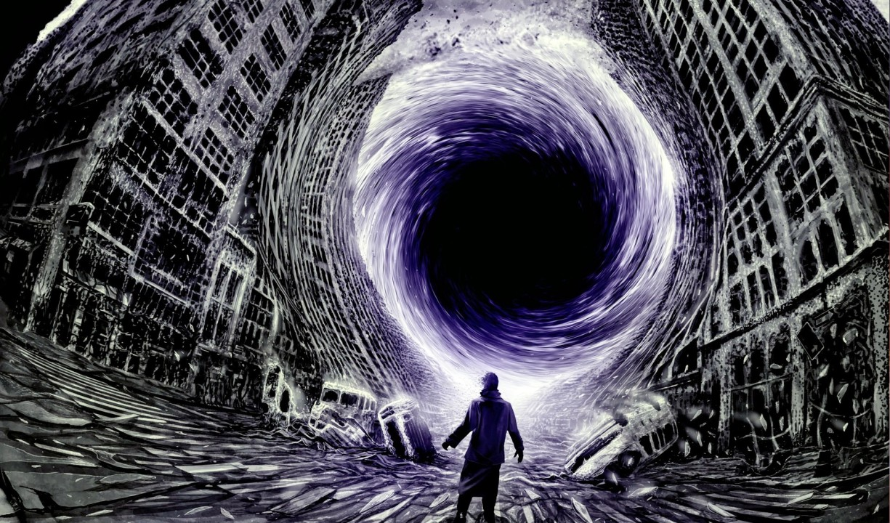
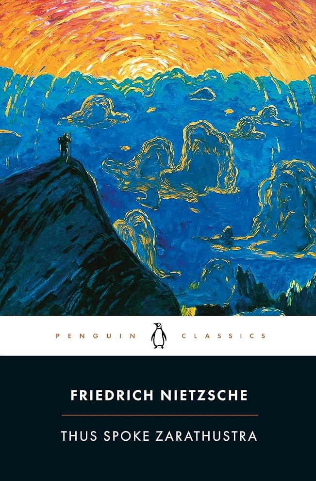
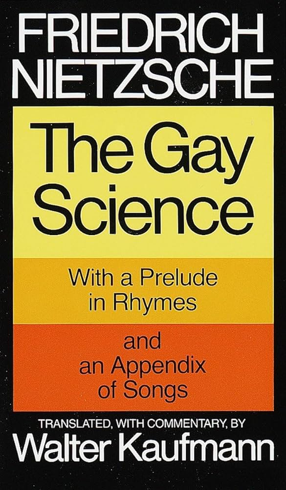
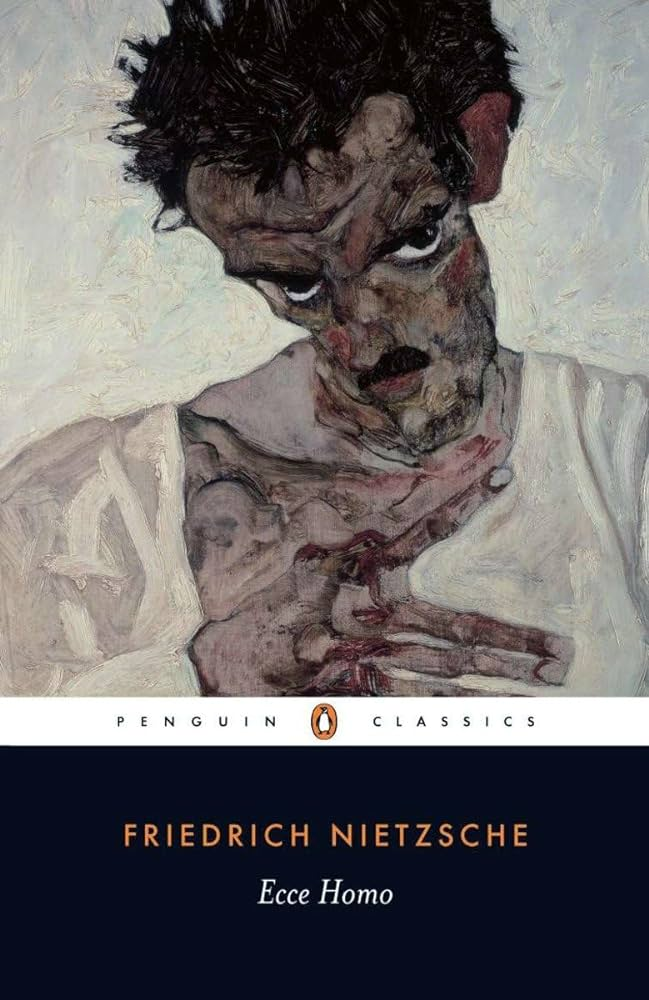
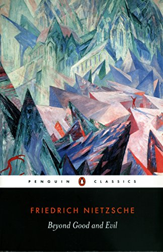

Whoever fights monsters should see to it that in the process he does not become a monster. And if you gaze long enough into an abyss, the abyss will gaze back into you.

The Secret Lies in the Reading and Writing.

Thus Spoke Zarathustra is a philosophical parable that follows the wanderings of a character called Zarathustra, a Nietzschean prophet.

The point of The Gay Science is to reflect how traditional religion and philosophy had become separated from life and enjoyment.

Ecce Homo is Nietzsche's autobiographical account of his life and writings from the perspective of a man who feels that his work is inspired by a force that propels him toward greatness.

Values and truths in a specific time may not apply to another time, so each individual must find their truth to lay the foundations of a new ethic, including the distinction of what is good and evil.
When thinking leads to the unthinkable, it is time to return to simple life. What thinking cannot solve, life solves, and what action never decides is reserved for thinking.
-C.G. Jung, The Red Book
Ubermensch shall be the meaning of the earth!
There exists in the world a single path along which no one can go except you: whither does it lead? Do not ask, go along it.